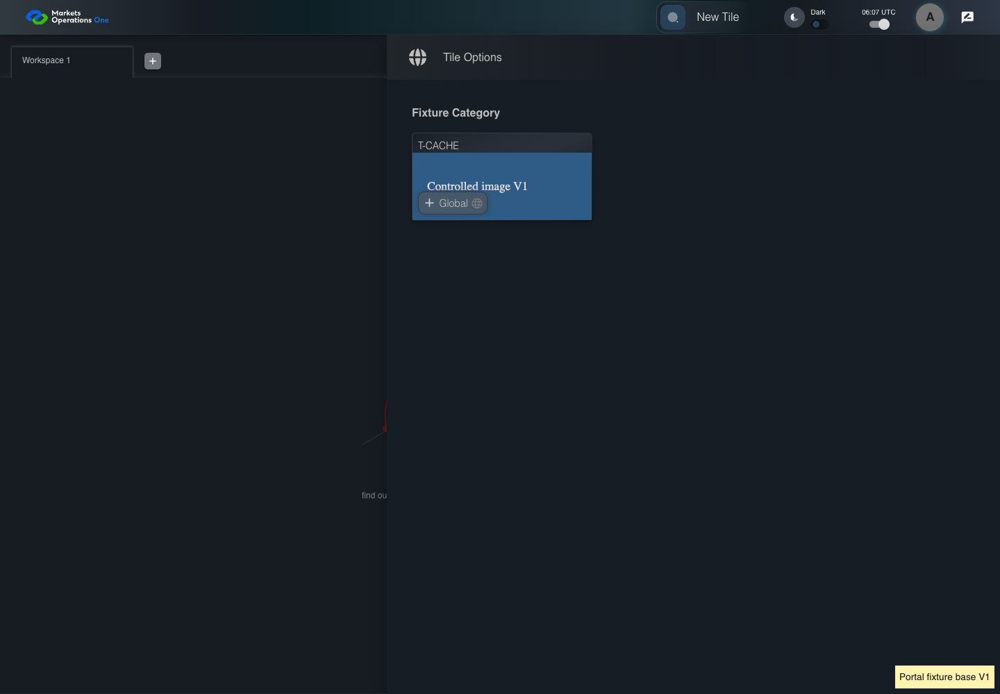
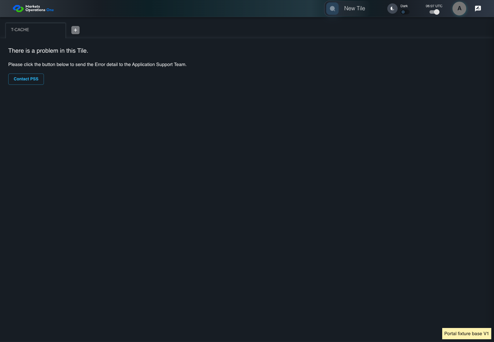
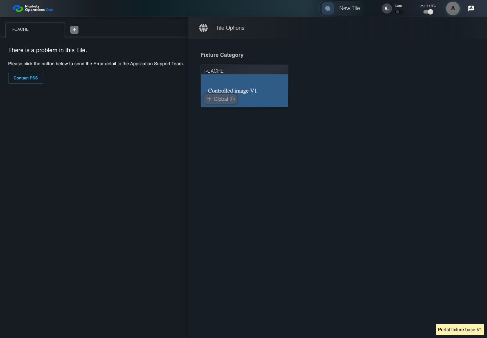

KNOW-047 real HTTP cache and controlled tenant lifecycle
PASS · application/run-050/know-047-real-http-cache-and-controlled-tenant-lifecycle-4a4689d7ef72-attempt-1 · ACTUAL_APPLICATION_LOCAL_SERVICES
Actual current React shell and real Chromium HTTP cache. Local HTTP fixture server supplies synthetic Alice, permissions, base entry wrapper, container, tile, trade, lazy content, CSS and images. V1/V2 markers identify controlled fixture assets. No browser routing, production CDN, real business tenant, or changed base binary acceptance.
2026-10-22T06:07:06.149Z to 2026-10-22T06:07:09.692Z
Assertions and result · Artifact manifest · Exact run inputs and source hashes
Result SHA-256:cf6aa9da2db4da125c41518e954a3edfea449023198efa5713a18b0d9ba491f3Machine observations
- cache-fixture-scope.json
e4308442d7a1a5f9143d0bfebd437eb074c0df16db762abd186023d4b6ec2285 - catalog-permission.json
2a91dd97d48ee8c892472830982d13c833bb2e82e59ca6073339c9d182b561d3 - held-v1-entry.json
fd15ebd1c2cf5cfa91ca2690c34286ffe3f0de8a5ffa51324924f0492d3aeaf3 - http-cache-observations.json
3079a566c43be1971378661478b4e2854df1a43fc45f44007b3e6bb224e92c4c
Screenshot capture: CAPTURED. Named frames: 11.
Step screenshot bindings: COMPLETE. 10/10 canonical steps have execution screenshots.
Bindings measure structural coverage only. They do not establish screenshot content quality or relevance.
Screenshot content review: NOT_REVIEWED. Recorded context: 0/11 frames. Identical image bytes: 5 repeated frames. Recorded context does not establish human visual review.
Canonical step timeline
Given Alice uses an isolated browser profile with the synthetic identity and permissions defined for this case
Execution: PASSED.
1. step-01 Visible state after step 1: Given Alice uses an isolated browser profile with the synthetic identity and permissions defined for this case
2026-10-22T06:07:07.702Z · 1440×1000
Step: /Users/lushevol/code/github/ratan-release-impact/workbench/tasks/ui-test-coverage-20261022/test-cases.md:12105
SHA-256:e073a145e20d9367b1e52935b861d3caa20dc309ef8375a6848ae59cfbff4262And Alice has catalog permission for the synthetic tile with exact title "T-CACHE"
Execution: PASSED.
2. step-02 Visible state after step 2: And Alice has catalog permission for the synthetic tile with exact title "T-CACHE"
2026-10-22T06:07:07.805Z · 1440×1000
Step: /Users/lushevol/code/github/ratan-release-impact/workbench/tasks/ui-test-coverage-20261022/test-cases.md:12106
SHA-256:e073a145e20d9367b1e52935b861d3caa20dc309ef8375a6848ae59cfbff4262Image bytes match frame 1. An unchanged image can be valid for consecutive assertions. This match does not establish correct step content.
And The browser holds a V1 tile entry
Execution: PASSED.
3. step-03 Visible state after step 3: And The browser holds a V1 tile entry
2026-10-22T06:07:07.893Z · 1440×1000
Step: /Users/lushevol/code/github/ratan-release-impact/workbench/tasks/ui-test-coverage-20261022/test-cases.md:12107
SHA-256:e073a145e20d9367b1e52935b861d3caa20dc309ef8375a6848ae59cfbff4262Image bytes match frame 2. An unchanged image can be valid for consecutive assertions. This match does not establish correct step content.
And The V1 chunk referenced by that entry returns HTTP 404
Execution: PASSED.
4. step-04 Visible state after step 4: And The V1 chunk referenced by that entry returns HTTP 404
2026-10-22T06:07:07.978Z · 1440×1000
Step: /Users/lushevol/code/github/ratan-release-impact/workbench/tasks/ui-test-coverage-20261022/test-cases.md:12108
SHA-256:e073a145e20d9367b1e52935b861d3caa20dc309ef8375a6848ae59cfbff4262Image bytes match frame 3. An unchanged image can be valid for consecutive assertions. This match does not establish correct step content.
When Alice clicks the text "New Tile" on the portal workspace page
Execution: PASSED.
5. step-05 Visible state after step 5: When Alice clicks the text "New Tile" on the portal workspace page
2026-10-22T06:07:08.166Z · 1440×1000
Step: /Users/lushevol/code/github/ratan-release-impact/workbench/tasks/ui-test-coverage-20261022/test-cases.md:12109
SHA-256:c068600c5fa37a13e929f981ef77d5da6ee8c40aaa4dd72f0b810baa91e756d5Then the drawer panel headed by "Tile Options" is visible on the portal workspace page
Execution: PASSED.
6. step-06 Visible state after step 6: Then the drawer panel headed by "Tile Options" is visible on the portal workspace page
2026-10-22T06:07:08.274Z · 1440×1000
Step: /Users/lushevol/code/github/ratan-release-impact/workbench/tasks/ui-test-coverage-20261022/test-cases.md:12110
SHA-256:11ac9e00742aabe6d7031d4273c95df018017fb11f1eb0ce1c618e30f1005119When Alice clicks the text "T-CACHE" in the drawer panel headed by "Tile Options"
Execution: PASSED.
7. step-07 Visible state after step 7: When Alice clicks the text "T-CACHE" in the drawer panel headed by "Tile Options"
2026-10-22T06:07:08.448Z · 1440×1000
Step: /Users/lushevol/code/github/ratan-release-impact/workbench/tasks/ui-test-coverage-20261022/test-cases.md:12111
SHA-256:3c09bad37a7a563bda37c13e31910ee412a4c3deca93259475b03a757d12f654Then No T-CACHE status identifies loading as completed after the chunk request fails
Execution: PASSED.8. step-08 Visible state after step 8: Then No T-CACHE status identifies loading as completed after the chunk request fails
2026-10-22T06:07:08.587Z · 1440×1000
Step: /Users/lushevol/code/github/ratan-release-impact/workbench/tasks/ui-test-coverage-20261022/test-cases.md:12112
SHA-256:2b85f28df6e0c677a5c998cb2a11c97572b41a7afee5cdf095c78599a9795ccdWhen Alice clicks the text "New Tile" on the portal workspace page
Execution: PASSED.
9. step-09 Visible state after step 9: When Alice clicks the text "New Tile" on the portal workspace page
2026-10-22T06:07:08.806Z · 1440×1000
Step: /Users/lushevol/code/github/ratan-release-impact/workbench/tasks/ui-test-coverage-20261022/test-cases.md:12113
SHA-256:30eaa9f24a6f957dabf658e92e5f91c90d54d2533a31d10ac46d4d2374a0c3daThen the drawer panel headed by "Tile Options" is visible on the portal workspace page
Execution: PASSED.
10. step-10 Visible state after step 10: Then the drawer panel headed by "Tile Options" is visible on the portal workspace page
2026-10-22T06:07:08.923Z · 1440×1000
Step: /Users/lushevol/code/github/ratan-release-impact/workbench/tasks/ui-test-coverage-20261022/test-cases.md:12114
SHA-256:30eaa9f24a6f957dabf658e92e5f91c90d54d2533a31d10ac46d4d2374a0c3daImage bytes match frame 9. An unchanged image can be valid for consecutive assertions. This match does not establish correct step content.
Additional named frames

The final visible state after the named test assertions.
2026-10-22T06:07:09.121Z · 1440×1000Step: Test source: /Users/lushevol/code/github/ratan-release-impact/workbench/e2e/audit-specs/cache-lifecycle.spec.ts:14
SHA-256:
30eaa9f24a6f957dabf658e92e5f91c90d54d2533a31d10ac46d4d2374a0c3daImage bytes match frame 10. An unchanged image can be valid for consecutive assertions. This match does not establish correct step content.
Screenshots establish visible state only. Assertions and traces support functional claims.